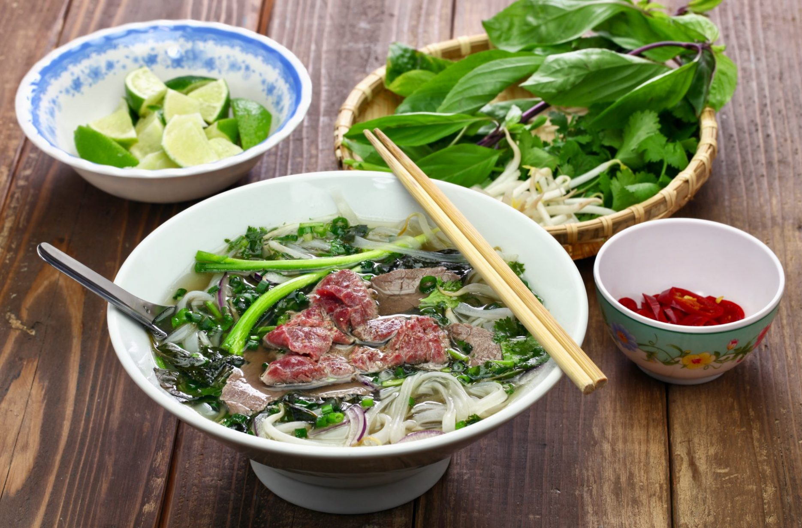

Pho
I've had many bowls of pho in my life, and then I had the one that blew
everything else out of the water. It was made by Aunty Jacqueline, my
mother in law's childhood friend from Vietnam where the two of them
grew up together. Her beef pho (pho bo) recipe was so much richer,
more flavourful and fragrant than everything I've had from a
Vietnamese restaurant here.
Ingredients
- 1.5 lb beef bones, joint or marrow bones preferred
- 1 lb brisket or chuck, if using chuck, cut into 1-inch thick slabs
- 1.5 lb oxtail, optional, see note
Steps
- Wash the bones, oxtail and stewing beef thoroughly under tap water
and place into the stock pot. Cover with 4L of water and bring to
a simmer. (If the water doesn't fit in your pot, you can top it
up later after it has reduced.)
1.5 lb beef bones,1 lb brisket or chuck,1.5 lb oxtail,4 L water
- Place the ginger and the onion halves, cut side up, on a baking
sheet, and place under the broiler for about 10 minutes, or until
the onions are slightly charred. Slice the broiled ginger lengthwise
into a few pieces, or smash it with a pestle until broken.
5 inches ginger,1 large onion
- Toast the spices: Add the cinnamon stick, star anise, black cardamom,
and green cardamom into a dry skillet and toast over high heat for a
few minutes, moving the pan constantly, until the green cardamom browns
slightly. Remove from the pan, then reduce the heat to medium and add
the coriander seeds. Move the pan constantly until they darken slightly
- this should take less than a minute. Remove from the pan.